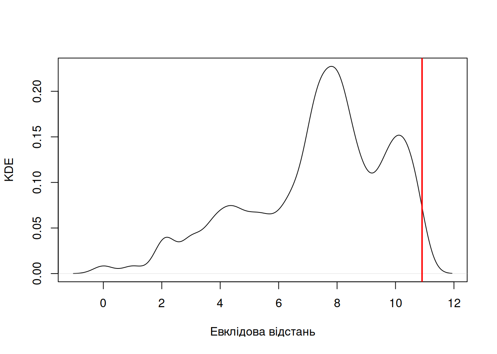

3.5 Тестування гіпотез
3.5.1 Статистична гіпотеза
Статистичне тестування гіпотез має багато спільного із філософією науки. Гіпотеза є припущенням, яке може бути істинним або ні. Будь-яке твердження може бути гіпотезою (наприклад, “гроза є виявом злості бородатого дядька на небі” є валідною гіпотезою), однак наукова гіпотеза має бути такою, яку можливо емпірично перевірити (див. критерій спростовуваності Поппера). В процесі наукового пізнання так чи інакше доводиться приймати чи відхиляти гіпотези залежно від наявних даних, однак варто пам’ятати що жодна гіпотеза не є істиною: навіть якщо всі попередні експерименти підтримують робочу гіпотезу, це не означає що наступний експеримент також її підтримає.
Статистичні гіпотези є прикладами гіпотез, особливістю яких є дуже формальний чисельний їх опис. Для кожної статистичної гіпотези має бути можливість записати її у вигляді рівняння, нерівності, чи логіки. Гіпотеза “гроза є виявом злості бородатого дядька на небі” не є валідною статистичною гіпотезою, однак її можна переформулювати в “ймовірність виникнення грози лінійно асоційована із густиною злих бородатих дядьків в об’ємі неба”. Так, методологічно таку гіпотезу все одно перевірити складно, але тепер у неї є математична складова, тож її можливо перевірити.
Статистичні гіпотези зазвичай є доволі простими твердженнями, аби їх можна було перевірити. На практиці, це часто означає пошук балансу між поглибленою трансформацією даних й тестуванням простої гіпотези. Застосовуючи принцип Оккама, якщо декілька статистичних гіпотез відповідають ідентичній науковій гіпотезі і не мають суттєвої різниці між собою, варто обирати найпростішу статистичну гіпотезу. Наприклад, якщо ви намагаєтесь порівняти вибірки мас тіла в двох субпопуляціях виду, \(A\) і \(B\), і припускаєте що між ними є істотна різниця, існує декілька способів сформулювати статистичну гіпотезу: (1) всі значення в \(A\) більші/менші за всі значення в \(B\) (не є хорошою гіпотезою, адже вона занадто консервативна – спрацює тільки коли дві хмари точок не перетинаються – і не є занадто простою, адже включає дві статистичні гіпотези \(a_i > b_i \forall a_i, a_b\) та \(a_i < b_i \forall a_i, a_b\)); (2) середнє значення вибірки \(A\) більше/менше за середнє значення \(B\) (менш консервативна, але все ще складна гіпотеза, що включатиме дві простіші гіпотези \(\bar{a} > \bar{b}\) і \(\bar{a} < \bar{b}\)); (3) середнє значення \(A\) не дорівнює середньому значенню \(B\) (включає лише одну елементарну гіпотезу \(\bar{a} \neq \bar{b}\)); (4) різниця між середніми значеннями вибірок не дорівнює нулю (мабуть, є найпростішою гіпотезою, до якої можна звести це питання про маси тіла в субпопуляціях, \((\bar{a} - \bar{b}) \neq 0\)).
3.5.2 Нульовий розподіл
Тестування статистичних гіпотез є доволі цікавим і, певною мірою, контрінтуїтивним процесом. Зазвичай, тести не кажуть “так, ваша статистична гіпотеза має право на життя”, а виходять із протилежного твердження – нульової гіпотези (null hypothesis), і, відтак, радше кажуть “не знаю як щодо вашої статистичної гіпотези, але альтернатива їй взагалі не підтверджується наявними даними”. Відтак, для кожної статистичної гіпотези (твердження \(H\)) існує певна нульова гіпотеза, яка намагається пояснити дані із припущення того, що \(H\) не відповідає дійсності (позначимо нульову гіпотезу як \(H_0\)). Як альтернатива нульовій гіпотезі існує альтернативна гіпотеза (alternative hypothesis) \(H_A\), яка робить твердження протилежне до \(H_0\) і, відтак, узгоджується із \(H\).
Навіщо це потрібно? Візьмемо до уваги попередній приклад: нашою науковою гіпотезою є те, що особини субпопуляцій А і B відрізняються масою тіла. Для перевірки цієї наукової гіпотези ми формулюємо чітку статистичну гіпотезу \(H: (\bar{a} - \bar{b}) \neq 0\). Як перевірити цю статистичну гіпотезу? Можна, звісно, порахувати середні двох вибірок, і можна гарантувати що їх різниця не дорівнюватиме нулю навіть якщо вони не надто сильно різняться – отримати вибірки із ідентичними середніми арифметичними дуже малоймовірно. Відтак, ця різниця буде відрізнятись від нуля, і для перевірки статистичної гіпотези необхідно зрозуміти яка різниця між середніми є достатньо великою, аби не вважатись просто статистичним шумом. В цій ситуації у нас є дві взаємозаперечні статистичні гіпотези: нульова \(H_0: (\bar{a} - \bar{b}) = 0\) та альтернативна \(H_A: (\bar{a} - \bar{b}) \neq 0\). Відтак, для відповіді на попереднє питання необхідно знати, який розподіл би мала різниця між середніми \((\bar{a} - \bar{b})\) за умови що \(H_0\) є істинною. Цей розподіл можна назвати нульовим (null distribution), із яким можна порівняти спостережене значення \((\bar{a} - \bar{b})\) і вирішити чи “так, спостережена різниця набагато більша від випадкового шуму навколо нуля в нульовому розподілі” (відповідно, відхилити \(H_0\) та прийняти \(H_A\)) або “ні, спостережена різниця настільки незначна, що її можна було б очікувати навіть якщо насправді різниці нема” (відхилити \(H_A\) та прийняти \(H_0\)).
За усієї своєї простоти, адекватний статистичний аналіз неможливий без адекватної нульової моделі (Harvey et al. 1983) – і ця тема настільки важлива, що їй присвячені цілі книги (Gotelli & Graves 1996)! Готеллі визначає нульову модель як “модель, що генерує тренди на підставі рандомізованих екологічних даних чи випадкової вибірки із відомого чи уявного розподілу […] створеного для утворення трендів, які можна було би очікувати за відсутності певного механізму [в якому ми зацікавлені]”.
Цікавим екологічним прикладом є відомий факт того, що біологічне різноманіття поблизу екватору нашої планети набагато вище порівняно із різноманіттям поблизу полюсів. Існує декілька наукових гіпотез, що пояснюють це спостереження: (1) продуктивність екосистем поблизу екватору вища, відповідно, є більше ресурсів для більшої кількості особин, що означає більше видів (Currie et al. 2004); (2) тропіки є найбільшим біомом, тож є більше площі для підтримки більшої кількості видів (Rosenzweig & Sandlin 1997); (3) тропіки є старішим біомом, відповідно, було більше часу для видоутворення (Fine 2015); (4) навколо тропіків темпи видоутворення вищі, а вимирання – нижчі (Mittelbach et al. 2007). Яку нульову модель використати для статистичної перевірки цих гіпотез? Мабуть, рівномірний розподіл різноманіття видів не є найкращою моделлю зважаючи на те, що навколо полюсів менше площі, та й не зрозуміло як врахувати форму планети тощо. Натомість, найпростішою нульовою моделлю варто вважати ефект середнього домену (mid-domain effect): якщо випадкові ареали видів розподілені між полюсами випадково, то суто із геометричних причин більше ареалів перетинатимуться десь між полюсами, й, відповідно, кількість видів буде найбільша посередині, коло екватору (Рис. 3.11).

Рис. 3.11: Ілюстрація ефекту середнього домену для пояснення розподілу біологічного різноманіття на планеті олівцями в коробці: якщо ареали видів випадкових діапазонів широт випадково розподілені між полюсами, то найбільше перетинів видів існуватиме поблизу полюсу. Фіолетові комірки відповідають кількості пересікань із олівцями за горизонталлю.
3.5.3 Тестування гіпотез
Суть будь-якого статистичного тесту полягає в оцінці певної статистики тесту (метрики) і оцінці значущості цієї метрики для висновку щодо істинності статистичної гіпотези за певного нульового розподілу. Залежно від парадигми статистичного аналізу, існують різні способи отримати нульовий розподіл. Наприклад, параметричні тести виходять із багатьох припущень і виводять параметричні нульові розподіли. Саме тому настільки важливо дотримуватись припущень тестів (вибірки мають бути нормально розподілені, мати однакові параметри варіації, бути незалежними тощо – в кожного тесту свій набір припущень).
Результатом статистичного тесту, зазвичай, є оцінка метрики тесту і асоційоване \(p\)-значення – cвящений грааль і наріжний камінь всякого аналізу, який всі хочуть оцінити але не всі знають що то таке. Мета статистичного тесту – це оцінити наскільки ймовірно було би отримати певні результати тесту якщо нульова гіпотеза є істинною. Статистичне тестування подібне до судового процесу. Уявіть собі, що підсудного звинувачують у скоєнні злочину (нульова гіпотеза за презумпції невинуватості – підсудний невинний, альтернативна – підсудний винний). Перед судом постає відповідальна й непроста задача прийняти рішення щодо винуватості підсудного за наявних даних. Реальність же може відповідати одному з двох варіантів: або підсудний справді вчинив злочин, або ні.
Якщо підсудний справді не вчиняв злочину (нульова гіпотеза істинна),
рішення суду щодо винуватості підсудного (хибно-позитивний результат) відправить невинну людину за ґрати, або
рішення суду щодо невинуватості (дійсно-негативний результат) залишить і підсудного, і суспільство задоволеними,
якщо ж підсудний насправді вчинив злочин (альтернативна гіпотеза істинна), то
рішення суду щодо винуватості підсудного (дійсно-позитивний результат) виллється у відбування заслуженого покарання, або
рішення суду щодо невинуватості (хибно-негативний результат) відправить злочинця на волю, що є небезпечним для суспільства.
Відтак, в такому уявному судовому процесі, залежно від реальності, можна припуститись однієї з двох критичних помилок:
помилки першого роду – відправити невинну людину за ґрати – прийняти альтернативну гіпотезу, коли нульова є істинною, або
помилки другого роду – відпустити злочинця на волю – прийняти нульову гіпотезу, коли альтернативна є істинною.
Яка із цих помилок є страшнішою, мабуть, є філософським питанням, і кожне суспільство нехай відповідає на нього самостійно. В науці ж помилка першого роду відповідатиме видаванню за істину доказів, які не відповідають дійсності; в той час як помилка другого роду – ігноруванню фактів. Як на мене, помилка першого роду шкодитиме науковому знанню сильніше.
Якби істина була відома, тоді в кожній парі нульової-альтернативної гіпотез можна було би оцінити дві ймовірності:
\(\alpha = P(\text{помилка I роду} = P(\text{відхилити } H_0| H_0 \text{ істина})\), яку ще називають рівнем значущості (significance level), та
\(\beta = P(\text{помилка II роду} = P(\text{не відхилити } H_0| H_0 \text{ хибна})\).
Два значення \(\alpha\) і \(\beta\) є зворотньо пов’язаними (Рис. 3.12): збільшення одного значення зменшить інше. Відтак, завдання відповідального статистичного аналізу – збалансувати \(\alpha\) і \(\beta\), знайти якесь максимальне значення \(\alpha\), яке ми можемо толерувати. На практиці, за таке значення часто приймають \(\alpha = 0.05\) (за незалежного повторення 20 експериментів, ми очікуємо принаймні одного хибно-позитивного результату). Втім, критичне значення \(\alpha\) для будь-якого тесту повинне враховувати баланс між \(\alpha\) і \(\beta\), тим, наскільки небажаними є помилки першого та другого роду. Отже, потрібно завжди пам’ятати що порогове значення \(\alpha = 0.05\) є лише умовністю.
Цікавою метрикою тесту, яку варто побічно згадати, є також потужність тесту (power) \((1 - \beta)\). Аналіз потужності (power analysis) є поширеним методом знаходження мінімального розміру вибірки для адекватної інтерпретації результатів статистичного тесту. Цей тип аналізу допоможе відповісти на питання “якщо я хочу провести [цей конкретний статистичний тест] із рівнем значущості [\(\alpha\)], то який мінімальний розмір вибірки потрібно було би набрати на стадії збору даних?”.
![***(a)*** Уявімо, що можливо оцінити розподіл статистики тесту $z$ за нульової ($H_0$) та альтернативної ($H_A$) гіпотез. Тоді було би можливо оцінити пов'язані ймовірності припуститися помилки першого роду ($\alpha$, хибно-позитивне рішення) та помилки другого роду ($\beta$, хибно-негативне рішення) як площі під кривими розподілів статистик. За спостереження статистики тесту $z_{obs}$ на рисунку ***(b)***, $p$-значення відповідає ймовірності спостерігати таке ж або більш екстремальне значення статистики за нульової гіпотези.](bookdown-demo_files/figure-html/fig-3-12-1.png)
Рис. 3.12: (a) Уявімо, що можливо оцінити розподіл статистики тесту \(z\) за нульової (\(H_0\)) та альтернативної (\(H_A\)) гіпотез. Тоді було би можливо оцінити пов’язані ймовірності припуститися помилки першого роду (\(\alpha\), хибно-позитивне рішення) та помилки другого роду (\(\beta\), хибно-негативне рішення) як площі під кривими розподілів статистик. За спостереження статистики тесту \(z_{obs}\) на рисунку (b), \(p\)-значення відповідає ймовірності спостерігати таке ж або більш екстремальне значення статистики за нульової гіпотези.
Підхід \(p\)-значення (p-value) у статистичному тестуванні намагається оцінити ймовірність того, що значення статистики тесту за істинності нульової гіпотези дорівнюватиме або буде ще більш екстремальним порівняно із спостереженим значенням. Варто зазначити, що на практиці оперують лише точковим спостереженим значенням статистики тесту (наприклад, різницею середніх значень вибірок \((\bar{a} - \bar{b})\)) та нульовим розподілом (як би були розподілені \((\bar{a} - \bar{b})\) якщо \(H_0: \bar{a} = \bar{b}\)?). Відтак, \(p\)-значення каже наскільки можна очікувати отриманого результату тесту за нульової гіпотези. Якщо ця ймовірність дуже маленька (наприклад, менше за обране порогове значення \(\alpha\)), тоді варто нульову гіпотезу відхилити й існують підстави вважати, що між двома вибірками є істотна різниця. Якщо ж ця ймовірність значна, тоді немає підстав вважати, що отримані результати є чимось більшим аніж статистичним шумом за нульової гіпотези.
Варто звернути увагу на поняття двосторонніх та односторонніх тестів (two-sided, upper-tail one-sided, lower-tail one-sided), які відповідають чітко сформульованій альтернативній гіпотезі. Наприклад, якщо ми перевіряємо факт різниці між двома середніми, то альтернативна гіпотеза виглядає як \(H_A: \bar{a} \neq \bar{b} \Leftrightarrow (\bar{a} - \bar{b}) \neq {0}\), отже, зони відхилення нульової гіпотези будуть знаходитись по обидва боки нульового розподілу із ймовірностями \(\alpha/2\). Якщо ж є підстави вважати що одне середнє більше за інше, альтернативна гіпотеза виглядатиме як \(H_A: \bar{a} > \bar{b} \Leftrightarrow (\bar{a} - \bar{b}) > {0}\) або \(H_A: \bar{a} < \bar{b} \Leftrightarrow (\bar{a} - \bar{b}) < {0}\). Відповідно, в такому випадку зона відхилення нульової гіпотези буде знаходитись у верхньому або нижньому хвості нульового розподілу і її ймовірність становитиме \(\alpha\).
Отже, тестування статистичної гіпотези включає наступні кроки:
формулювання нульової \(H_0\) та альтернативної \(H_A\) гіпотез,
вибір критичного значення рівня значущості \(\alpha\),
отримання вибірки достатнього розміру і обчислення статистики обраного тесту \(z\),
порівняння спостереженої статистики тесту із нульовим розподілом31. Є два поширених способи провести цю операцію:
древній метод: поглянути в таблицю критичних значень за певних параметрів нульового розподілу (\(z_{\alpha}\)) і порівняти спостережену статистику із критичною для певного \(\alpha\),
адекватніший підхід: обчислити точне значення для параметризованого нульового розподілу та спостереженої статистики тесту,
зробити висновки щодо відхилення нульової гіпотези.
3.5.4 Парадигми статистичного аналізу
Різниця між трьома основними парадигмами статистичного аналізу, їх переваги й недоліки, та чим вони відрізняються доволі влучно описано в підручнику Готеллі та Еллісон “Початки екологічної статистики”. В цьому підрозділі я наводжу лише основні ідеї цих парадигм, але варто пам’ятати, що дослідженню кожної з них можна приділити роки життя.
3.5.4.1 Частотницька, або фреквентистська парадигма
Найпоширеніший підхід до статистичного аналізу – частотницький (frequentist approach) – ґрунтується на припущенні, що ймовірність описує ніщо інше, як частоту подій за безкінечного повторення експерименту, й, відповідно, ми можемо спостерігати лише якусь зліченну кількість подій і на їх підставі спробувати оцінити асоційовані ймовірності. Цей підхід часто спрощує спостережувану реальність до ідеальних моделей (які можуть бути дуже складними математично, але все ж простішими за дійсність), які відображені у параметричних моделях – математичних функціях із відносно незначною кількістю параметрів. Відтак, і тестування гіпотез базується на нульових розподілах із визначеним математичним формулюванням й параметрами (такими розподілами є, наприклад, нормальний, t-розподіл Стьюдента, F-розподіл Фішера тощо).
Параметричні методи завжди мають набір припущень, і перед застосуванням цих методів завжди необхідно перевіряти чи ваші дані відповідають цим припущенням. Більшість параметричних методів матимуть припущення, що (1) всі спостереження в даних зібрані незалежно й випадково, та (2) дані зібрані із генеральних сукупностей із певним визначеним розподілом. Перше припущення не те щоб є специфічним для частотницької парадигми, а є критичним для експериментального дизайну за будь-якого статистичного підходу: вибір залежних між собою спостережень або невипадковий підбір спостережень викликатиме упередження в даних, тож результати всякого статистичного аналізу не будуть адекватними. Друге припущення найчастіше каже, що вибірки в аналізі повинні бути розподілені нормально.
Існують, звісно, і непараметричні методи, однак їх підхід до визначення ймовірності події залишається незмінним. Непараметричні підходи мають послаблені вимоги до розподілу вибірки і є чудовою альтернативою параметричним тестам коли, скажімо, не вдається підтвердити що ваші дані розподілені нормально. Із непараметричними методами завжди варто бути обережними, оскільки навіть якщо вони є надійними (robust) за порушення припущення про розподіл даних, вони є чутливими до всіх інших припущень32.
3.5.4.2 Баєсівська парадигма
Баєсівська парадигма є складнішою для інтуїтивного розуміння і вимагає більшої підготовки. Крім того, я неодноразово чув думку, що Баєсівський метод – то часто лише модний спосіб тестувати гіпотезу, для якої звичайний параметричний тест дав би таку ж відповідь. Філософія Баєсівського підходу полягає в тому, що часто в розпорядженні існують попередні дані щодо тестованої гіпотези. У частотницькій парадигмі кожен окремий експеримент відбувається “наосліп”, адже існує припущення, що кожен експеримент отримає якусь репрезентативну вибірку із генеральної сукупності і із його результатів можна судити про тренди в самій генеральній сукупності. Однак, якщо ви проводите експеримент, подібний до якого вже хтось колись проводив, то чи не розсудливіше врахувати ті попередні, пріорні дані?
Баєсівський аналіз намагається поглибити наші знання щодо наукової гіпотези із кожним експериментом із врахуванням попередніх даних, що, в цілому, відповідає сучасному науковому підходу: із кожним експериментом ми шліфуємо наявне наукове знання. Скажімо, ми намагаємось оцінити якийсь параметр в генеральній сукупності. Першим кроком у Баєсівському аналізі було би змиритись із думкою про те, що якщо ми намагаємось оцінити цей параметр і його оновлене оцінене значення, скоріш за все, буде відрізнятись від пріорної оцінки, то цей параметр є не фіксованим значенням, а, радше, розподілом значень. Із попередніх експериментів мають бути наявні оцінки розподілу параметру, тож цей розподіл ми назвемо пріорним, і тепер нашим завданням є оцінити постеріорний розподіл параметру за даних нового експерименту, що можна зробити із застосуванням теореми Баєса:
\[P(\text{гіпотеза}|\text{дані}) = \frac{P(\text{гіпотеза})P(\text{дані}|\text{гіпотеза})}{P(\text{дані})}\]
Отже, якщо частотницькі методи питають яка ймовірність отримати значення статистики рівне або більш екстремальне за спостережене значення в наявних даних, якщо нульова гіпотеза істинна, то Баєсівський підхід намагається відповісти яка ймовірність гіпотези про статистику тесту за наявних даних. У цій формулі \(P(\text{гіпотеза}|\text{дані})\) називають постеріорною ймовірністю, \(P(\text{гіпотеза})\) – пріорною ймовірністю, \(P(\text{дані}|\text{гіпотеза})\) – правдоподібністю (що відображає ймовірність спостереження цього конкретного набору даних якщо гіпотеза істинна), в той час як знаменник \(P(\text{дані})\) у Баєсівській теоремі є лише нормалізуючою константою (ймовірність даних за усіх можливих гіпотез), якою можна знехтувати і переписати вираз як
\[P(\text{гіпотеза}|\text{дані}) \propto P(\text{гіпотеза})P(\text{дані}|\text{гіпотеза})\]
Аби ще сильніше ускладнити інтуїтивне розуміння цієї парадигми, кожну із ймовірностей у цій формулі варто уявляти не як точкове значення ймовірності, а як розподіли густини ймовірності. Вибір пріорного розподілу залежить від попередньо існуючих даних: навіть із описових даних можна спробувати визначити певний виправданий розподіл. Якщо ж цього не вдається зробити, альтернативою (яку дуже часто використовують) є визначення неінформативного розподілу (uninformative prior), наприклад, нормального розподілу із настільки високим параметром \(\sigma^2\), що на локальних діапазонах він апроксимує до плаского рівномірного розподілу. У виборі неінформативного пріорного розподілу й криється критика повсюдного застосування Баєсівської парадигми: якщо в моделі відсутнє адекватно визначене пріорне знання, то Баєсівський аналіз не має жодних переваг над частотнитцькими методами (Lemoine 2019). Відтак, вибір пріорного розподілу повинен бути обґрунтованим.
Подальші кроки вимагають оцінки функції правдоподібності даних за істинності гіпотези (\(P(\text{дані}|\text{гіпотеза}\)) та нормалізуючої константи інтегрованої правдоподібності (marginal likelihood), що іноді можна зробити аналітично, але, зазвичай, розв’язується за допомогою алгоритмів ітеративно. На виході Баєсівський підхід повертає розподіл постеріорної ймовірності. Як із розподілу зробити висновок? Поширеним інструментом є оцінка імовірного інтервалу (credibility interval, не плутати із довірчим інтервалом, confidence interval), наприклад, 95% імовірного інтервалу як 2.5%- і 97.5%-ті перцентилі постеріорного розподілу. Розташування спостереженої статистики тесту відносно 95% імовірного інтервалу постеріорного розподілу (в межах або за межами), відтак, дає підставу зробити висновок щодо статистичної гіпотези.
В контексті Баєсівської парадигми варто згадати методи Монте-Карло ланцюгів Маркова (Markov chain Monte Carlo, MCMC). Процес Маркова, або ланцюг Маркова – це такий процес, в якому об’єкт в момент часу має певне значення, і переходить в інший стан в наступний момент часу. Такі стани можуть бути як неперервною змінною, так і дискретною; найпростіше для розуміння уявляти скінченний, бажано невеликий, набір дискретних станів. Популярним прикладом є погодні умови в певний день. Скажімо, набір можливих станів в цій системі є \(\{\text{сонячно}, \text{хмарно}, \text{дощ}\}\), і кожен день приймає один із цих станів. Якби такий процес був Марковським, то в кожен окремий день ймовірність стану залежить тільки від стану в попередній день; випадковий процес, в якому ймовірність стану в момент часу за відомої послідовності станів в усі попередні кроки залежить тільки від стану протягом останнього попереднього кроку називають таким, що має властивість Маркова. Ланцюг Маркова описується набором ймовірностей переходу від станів. Ланцюги Маркова часто зображають у вигляді графічних ланцюгів (Рис. 3.13), в той час як їх математична репрезентація виглядає як матриця ймовірностей переходів – матриця переходів \(\mathbf{T}\) (transition matrix). В таких матрицях рядки відповідають попереднім станам, а колонки – наступним. Сума ймовірностей переходів із певного стану (сума рядків) повинна дорівнювати одиниці.
Рис. 3.13: Гіпотетичний ланцюг Маркова у графічному вигляді та у вигляді матриці ймовірностей переходів, що описує погоду протягом дня як один із трьох можливих станів. Після сонячного дня варто очікувати сонячний день, після хмарного – дощів, після дощового – сонячного тощо.
Звісно, розвиток подій в ланцюзі Маркова може залежати від розподілу станів на стадії його ініціалізації – а отже, і на кожному кроці частоту станів можна описати як функцію розподілу ймовірності. Певні ланцюги Маркова можуть досягнути рівноважного стану, коли розподіли ймовірності перестають змінюватись із наступним кроком. Відповідно, стаціонарним (stationary) розподілом називають такий розподіл \(\vec{\pi}\), для якого справджується умова, що \(\vec{\pi} \mathbf{T} = \vec{\pi}\). Пермутації Монте-Карло ланцюгів Маркова відповідають алгоритмам, які ітерують велику кількість кроків крізь такий Марковський процес, стаціонарний розподіл якого відповідає шуканому розподілу. Найвідомішим є алгоритм Метрополіса-Хастінгса (Metropolis-Hastings algorithm) для отримання випадкової вибірки \(X\) із певного складного розподілу або просто функції \(f(x)\), із якої непросто отримати випадкову змінну аналітичним шляхом. В цьому алгоритмі нарощується ланцюг випадкових значень, що на початку алгоритму обирається із заданого пріорного розподілу. На кожному кроці \((i)\) алгоритм бере до уваги значення \(x_{i-1}\) із розподілу попереднього кроку, і будує навколо \(x_{i-1}\) якийсь визначений розподіл \(g(x_{i-1})\) (наприклад, нормальний із фіксованою між кроками варіацією \(\mathcal{N}(\mu = x, \sigma^2)\)). Із цього розподілу обираєтся випадкове значення-кандидат \(x'\) таке що \(x` \sim g(x_{i-1})\) (якщо було обрано нормальний розподіл, то\(x' \sim \mathcal{N}(\mu = x_{i-1}, \sigma^2)\)). Після цього алгоритм обирає, чи взяти до уваги \(x'\), при чому ймовірність вибору значення-кандидата \(x'\) визначається відношенням \(g(x')/g(x_{i-1})\). Якщо обрано \(x'\), то нове значення в розподілі нарощене протягом цього кроку становитиме \(x_i = x'\), якщо ж ні, то \(x_i = x_{i-1}\). Процедура повторюється багаторазово (розряду тисяч разів), і в результаті видає ланцюг \(\{x_1, x_2, x_3, \cdots, x_n\}\). Із цього ланцюга викидається певна кількість перших \(m\) ланок, оскільки в них алгоритм іноді видає невдалі значення – цей період називають розігрівом (burn-in). Залишок ланцюга \(\{x_{m+1}, x_{m+2}, \cdots, x_n\}\) ж утворює вибірку, розподіл якої апроксимує до шуканого. Якщо шуканий розподіл відповідає постеріорному розподілу в Баєсівській парадигмі, а функція \(g(x)\) пропорційна до функції правдоподібності даних за тестованої гіпотези, то цей алгоритм є вдалим вибором для Баєсівського аналізу. В мережі нескладно знайти приклади простих алгоритмів МСМС на R.
3.5.4.3 Пермутаційний аналіз
Принцип роботи МСМС навіює певний настрій ітеративного стилю статистичного аналізу: якщо не вдається вирішити проблему аналітично, просто напишіть алгоритм, який оцінить оптимальне рішення! Ба більше, як вже було згадано вище, параметричні та непараметричні тести працюють лише коли дані відповідають всім припущенням цих тестів. Якщо це не відповідає дійсності, то ітеративні обчислення також можуть стати в нагоді, варто лише пам’ятати процедури тестування гіпотез.
Уявіть два угруповання, \(A\) і \(B\). Кожне угруповання описується як кількість особин певного виду (обмежимо \(\gamma\)-різноманіття, тобто сумарне різноманіття між угрупованнями, до десяти видів), що для цієї ілюстрації ми згенеруємо випадково із розподілу Пуасона.
Якщо позначити кожен вид, то ми можемо поглянути на ці два угрупованні як на таблицю:
## A B
## a 5 4
## b 10 4
## c 6 4
## d 7 3
## e 5 7
## f 3 3
## g 7 4
## h 9 2
## i 4 4
## j 3 3І от питання: наскільки ці угруповання подібні між собою? Для відповіді є цілий набір різноманітних індексів подібності, однак в цьому прикладі можемо обмежитись доволі стародавньою метрикою – Евклідовою відстанню. Зі школи можна пригадати, що квадрат гіпотенузи дорівнює сумі квадратів катетів. Якщо задуматись, то довжина гіпотенузи є дистанцією між двома кутами прямокутного трикутника, координати яких становлять \((x = \text{довжина катету 2}, y = 0)\) та \((x = 0, y = \text{довжина катету 1})\). Відповідно, цю теорему Піфагора можна використати для розрахунку дистанції між двома точками \(p\) і \(q\) в двовимірному просторі із координатами \((p_1, p_2)\) та \((q_1, q_2)\): \(d_{p, q}= \sqrt{(p_1 - q_1)^2 + (p_2 - q_2)^2}\). Краса Евклідової дистанції в тому, що її формулу можна екстраполювати на будь-яку кількість вимірів (позначимо вимірність як \(n: i = 1, 2, 3, \cdots, n\)): \(d(p, q) = \sqrt{\sum_{i=1}^n (p_i - q_i)^2}\). Евклідова дистанція вказує на те, наскільки два об’єкти близькі один до одного в просторі, і якщо уявити угруповання такими об’єктами, то Евклідову дистанцію можна спробувати використати для оцінки того, наскільки два угруповання подібні один до одного33.
## [1] 10.90871І отже ми отримуємо якесь значення дистанції – нашу статистику. Тепер постає інше питання, що це значення значить? Чи наші угруповання подібні між собою, чи ні? Це є гарним питанням для застосування статистичного тестування, в якому нульовою гіпотезою є те, що два угруповання походять із однієї генеральної сукупності (метаугруповання – множини угруповань), а альтернативна гіпотеза – що два угруповання походять із різних метаугруповань. Для тестування нульової гіпотези не залишається нічого, окрім як отримати нульовий розподіл для наших даних.
Можливо, існує спосіб аналітично знайти розподіл очікуваних Евклідових дистанцій для вибірок із однієї генеральної сукупності, однак вирішення такої задачі вимагатиме чимало часу і ми не знаємо чи це взагалі можливо. Тут у нагоді стає метод бутстреп (bootstrap), який дозволяє оцінити нульовий розподіл на підставі наявних даних. Симулювати нульову гіпотезу нескладно: для цього лише необхідно перемішати чисельності видів в спостережених угрупованнях. В цій конкретній ситуації, втім, постає питання адекватних нульових розподілів, адже за нульової гіпотези чисельності видів можуть бути маніпульовані тільки для кожного виду окремо (тобто не буде коректним замінити чисельність виду a в угруповання А чисельністю виду j із угруповання В, адже чисельності видів не є незалежними; втім, це не було би проблемою для незалежних змінних на кшталт результатів морфологічних промірів випадкових особин). Відтак, визначмо функцію, яка перемішуватиме чисельності видів таким чином, що симульована чисельність виду в угрупованні може рівноймовірно походити з угруповання А чи В. Варто зазначити, що для бутстрепу необхідно використовувати процедуру відбору із заміщенням (sampling with replacement)34.
# для всяких пермутацій необхідно повернути випадкове зерно до замовчування
rm(.Random.seed, envir=globalenv())
mix_coms <- function(com){
out <- apply(com, 1, function(x) sample(x = x, size = 2, replace = T)) %>% t() %>% as.data.frame()
colnames(out) <- colnames(com)
return(out)
}
new_coms <- mix_coms(coms)
new_coms## A B
## a 4 4
## b 10 10
## c 6 6
## d 7 7
## e 5 5
## f 3 3
## g 4 7
## h 2 9
## i 4 4
## j 3 3## [1] 7.615773Тепер цю операцію можна повторити багато разів, скажімо, десять тисяч разів, аби згенерувати розподіл статистики.
d_null <- numeric(10000)
for (i in 1:10000){
new_coms <- mix_coms(coms)
d_null[i] <- eucl_dist(new_coms$A, new_coms$B)
}Погляньмо на розподіл цієї статистики (чорна лінія відповідає ядерній оцінці густини розподілу) і порівняймо його із спостереженим значенням (червона лінія).
density(d_null) %>% plot(xlab = "Евклідова відстань", ylab = "KDE", main = "")
abline(v = d_obs, lwd = 2, col = "red")
Оскільки за нульової гіпотези можна очікувати, що значення відстані наближатиметься до нуля (до того ж, дистанція не може бути негативною), екстремальні значення нульового розподілу відповідатимуть значним позитивним значенням. Ця логіка дозволяє оцінити псевдо-\(p\)-значення як для одностороннього тесту:
## [1] 0.0082Отже, в генерованому розподілі нульової вибірки, ймовірність отримати спостережене або більше за спостережене значення статистики \(p \approx 0.01\) (оскільки процес стохастичний, оцінка відрізнятиметься за кожного компілювання), що дозволяє відхилити нульову гіпотезу і стверджувати що два угруповання відрізняються між собою.
Пермутаційні методи є доволі пластичними, адже їх можна застосовувати для будь-яких статистик і будь-яких розподілів вихідних даних. Великим недоліком, втім, є те, що цей метод є комп’ютер-інтенсивним, і для великих наборів даних обчислення вимагатимуть чимало комп’ютерного часу (секунди, хвилини, іноді дні).
Нульовий розподіл може бути згенеровано в межах параметричного тесту (наприклад, як t-розподіл в t-тесті Стьюдента) або пермутаційно.↩︎
Наприклад, для порівняння середніх двох вибірок хорошим вибором статистичного тесту є t-тест Стьюдента. Однак якщо ваші дані не розподілені нормально, вам можуть порадити тест Вілкоксона (Wilcoxon signed-rank test) або тест Манна-Вітні (Mann–Whitney U test). Мало хто знає, втім, що ці тести дуже чутливі до власних припущень: тест Вілкоксона працює лише для незалежних пар залежних (в межах пар) значень, а тест Манна-Вітні передбачає ідентичні розподіли між двома групами за нульової гіпотези.↩︎
Евклідова дистанція не є найбільш поширеним показником подібності угруповань, але в цьому контексті є зручною для прикладу.↩︎
Якщо із вибірки обрати певний елемент, після чого цей елемент не можна обрати ще раз, такий відбір називається відбором без заміщення (sampling without replacement). Наприклад, ви намагаєтесь оцінити розподіл кольорів в кошику із кольоровими кульками: у відборі без заміщення кожну кульку дістати можна тільки раз. На противагу, якщо ви дістаєте одну кульку, записуєте її колір, і кладете назад у кошик, це є прикладом відбору із заміщенням. Очевидно, розмір вибірки не може бути більшим за розмір вихідної вибірки за відбору без заміщення, однак може бути більшим за відбору із заміщенням.↩︎